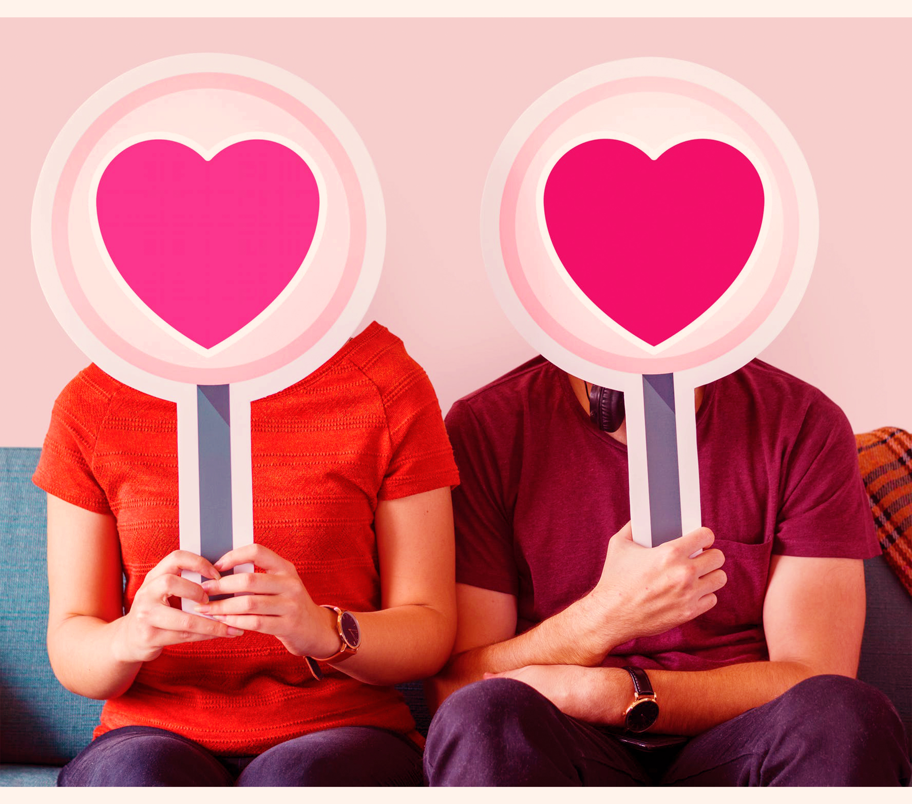

Overview
Social media has been a large part of today's culture, as it has widely shaped and influenced people's lives, especially Millennials and Generation Z’s. With this, many have taken the opportunity to use social to network professionally, to meet new friends, and to even find love. With the rise of social search mobile app for dating, applications like Tinder and Bumble has been used by many to find relationships, especially with the Millennials and Gen Z’s. It is estimated that over 50 million are using Tinder in 2014, and over 8 billion matches have been made since its launch in 2012. It is also estimated that Bumble has over 22 million users in 2017, and a survey has also calculated that 46.2% of its users are female.
As many people began to rely on social network to look for relationships and companion, the concept of “Catfish” has become a large problem with these social media apps. The idea of Catfish is when a someone uses another person’s image and information, while claiming that the stolen identity as their own. It is often that the stolen pictures and information are taken from another person’s social media. Not only the information can be used in dating apps, but many instances have people used the stolen information to regular social media such as Facebook, Twitter and Instagram. With this, people’s lives have been negatively impacted, as their information may have been used to create a negative persona online. The name “Catfish” has been used to describe this problem, as the show “Catfish” premiered in MTV, which is about the problems of identity theft in online dating.
Top Dating Apps
- Tinder
- Bumble
- OkCupid
- PlentyofFish
- Coffee Meets Bagel
- Match
It is widely question as to why catfishers choose to steal another people’s identity instead of using their own. One of the main reasons why people catfish is people are insecure about their appearance and personality. They may perceive themselves as “unattractive” and “unworthy” in their own eyes and would often steal people’s identities who they consider as “good looking.” There are other instances in which people would catfish in order to seek revenge and destroy another person’s reputation. With this, people may harass and intimidate another person using other people’s image in order to hide their own identity online. People who may have stolen another person’s identity may also experience mental illness, as they may suffer from depression or low self-esteem, and one of the only ways that they can communicate with other people is by taking another person’s identity and pretending to be another person. Another reason why people steal another identity is to hide their own identity to exploit others. People may have taken advantage of people for their money, troll another person and even ruin people’s relationships due to catfishers. This has a long-lasting effect to the people being catfished as this can be mentally damaging to people. When they become emotionally invested to the catfisher, this often leads into people having the difficulty to trust others in the future. With this, people also have the feeling of regret and embarrassment as they may have gone through a heartbreak, knowing that the person they fell in love with does not exist.
With the existing problems of catfishing, awareness is important in ensuring that people will avoid getting catfished online. One of the important ways to avoid being catfished online is to be cautious when talking to strangers online. It is important to be careful when sharing information as this can potentially lead to a person’s information being leaked. It is also important to ask questions to ensure that the person is telling the truth. This is a great way to catch if the person is either telling the truth or a lie. It is extremely important to also trust instinct and stop talking to the person if they are showing signs of dishonestly or suspiciousness. It is also important to never send people money, as many catfishers have targeted people to specifically scam and take their money. While ensuring that people get the best experience in dating websites, it is important to be cautious and to be careful online.
Media
Signs you're being Catfished
| They do not have enough information online | This is a big sign that a person is a catfish, as it can be easily identified if the person does not have enough information on their social media. This may also mean that the person does not often interact with their friends online, as they do not have enough information to share. |
| They do not want to meet in person | This is one of the biggest signs if the catfisher does not want to meet as it is going to reveal that they are not who they present themselves on social media. At times, they will pretend that they are willing to meet, and would later back out and give an excuse to the person they are catfishing. |
| They do not want to video chat | One of the many excuses that catfishers use when they do not want to video chat is that their phone cameras do not work, or that they are busy. |
| They do not have many friends on their social media | It is difficult for catfishers to often get friends on social media, as people will not befriend or follow them if they do not personally know the person. |

About the Author
Janne Mundin is a senior studying Media and Communications Studies at Florida State University. This website is specifically made for the Web Applications Development class. She is interested in learning on how to build a website from scratch and she hopes to bring her Graphic and Web Design skills in her future career. She also specifically picked the subjects regarding Social Media and the concept of "Catfishing" as she is interested in going into Social Media in her future career.

Author at Stonehenge, December 2018
References
Title: 6 Most Popular Dating Apps For Millennials In 2018
- Author: Laken Howard
- Publisher: Bustle
- Date: June 6, 2018
Title:Catfishing
- Publisher: The Cybersmile Foundation
- Date: 2018
Title:Nev Schulman Quotes
Wikipedia: Bumble
Wikipedia: Tinder

Color Palette
I particularly used these colors from the website coolors.com, as this website helps you determine which colors go well together. As I was browsing, I particularly liked the color "yellow" that popped up in the website, and worked around this color to be published to this website.

This work is licensed under a Creative Commons Attribution-ShareAlike 4.0 International License.© Janne Mundin